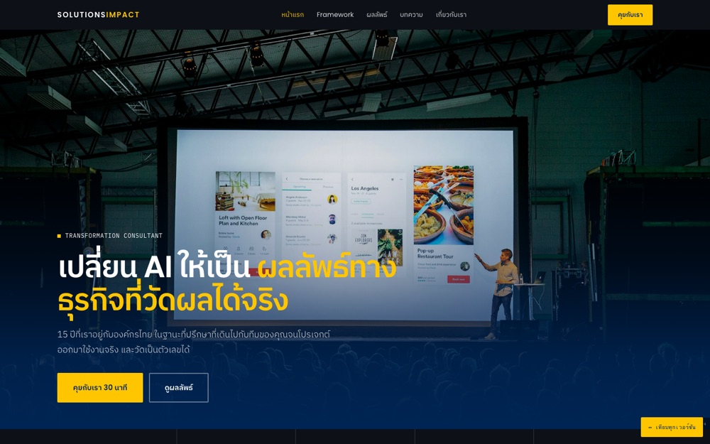

V8 ที่ทำให้ครบ — เว็บจริง 8 หน้า
Clone ดีไซน์และ section ของ V8 มาทั้งหมด Framework ยังอยู่ครบ · ตัดส่วน Projecting ที่แปะโปรเจกต์ดิบออก · แก้ประโยคเดียวที่แปลก เป็นการบอกตรงๆ ว่าเราทำอะไร · แตกเป็นเว็บหลายหน้าจริงพร้อมบทความ 3 ชิ้น